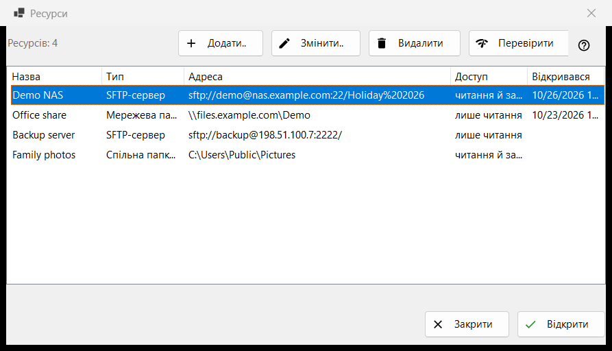
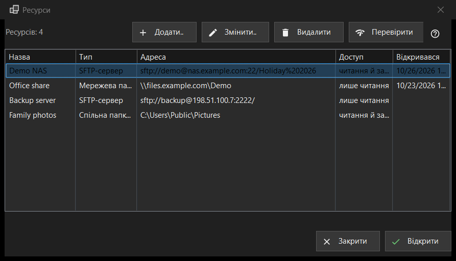

Ресурси
Призначення
Список серверів і мережевих папок, які вміє відкривати переглядач: SFTP-сервери, мережеві папки Windows (SMB) і папки, які Share Manager роздає з цього комп'ютера. Вікно відкривається пунктом «Керування ресурсами..» у меню теки; такий самий список є на сторінці «Сервер і ресурси» вікна налаштувань.


Порядок дій
- Натисніть «Додати..» і заповніть дані сервера або завантажте готовий файл налаштувань через кнопку «Ще».
- Виберіть новий рядок і натисніть «Перевірити».
- Натисніть «Відкрити» або двічі клацніть рядок: переглядач підключиться й покаже теку сервера.
- «Змінити..» змінює адресу або пароль, «Видалити» прибирає ресурс зі списку.
Елементи вікна
Список
Стовпці: «Назва», «Тип», «Адреса», «Доступ» і «Відкривався». У стовпці «Тип» буває «SFTP-сервер», «Мережева папка (SMB)» або «Спільна папка (Share Manager)», у стовпці «Доступ» - «лише читання» або «читання й запис». Під списком показано кількість ресурсів; якщо ресурсів немає, вікно показує підказку й кнопку «Додати..». «Змінити..», «Видалити» і «Перевірити» (а у вікні «Ресурси» ще й «Відкрити» в нижньому рядку) працюють лише за вибраного рядка; доки його немає, підказка на кнопці каже: «Спочатку виберіть ресурс у списку».
Додати.. і Змінити..
«Додати..» відкриває форму нового ресурсу, «Змінити..» - форму вибраного. Введений там пароль зберігається в зашифрованому вигляді для вашого облікового запису Windows, а не в самому списку.
Видалити
«Видалити» спершу питає; відповідь за замовчуванням «Ні». Питання називає ресурс, попереджає, що збережений для нього пароль також буде видалено, і нагадує, що файли на сервері не зачіпаються.
Перевірити
«Перевірити» перевіряє вибраний рядок, не відкриваючи його. Для SFTP-сервера опитуються всі відомі адреси ресурсу, і для кожної повідомляється «хост:порт» та вердикт: одна жива відповідь SSH - успіх, відкритий порт без SSH - попередження, мовчання - збій. Пароль не надсилається. Для мережевої папки програма відкриває ресурс зі збереженим паролем і читає верхню теку; якщо пароль не збережено, вона просить ввести його через «Змінити..». Для рядка Share Manager перевіряється лише, чи є тека на цьому комп'ютері.
Відкрити
«Відкрити» або подвійне клацання по рядку передає ресурс переглядачу: він підключається й показує його теку. Якщо пароль не збережено або збережений не підійшов, спершу з'являється невелике вікно із запитом пароля.